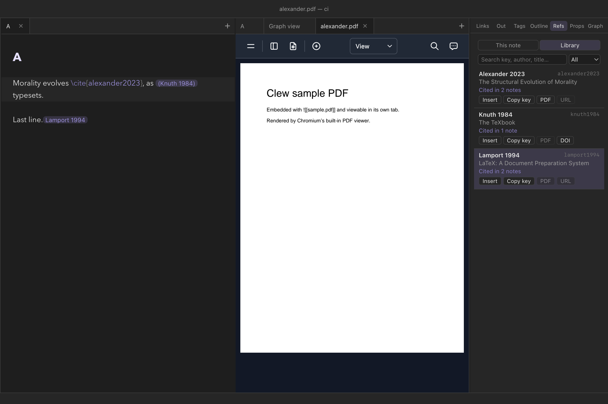

Reading mode
Citations and bibliographies
Clew cites the way academic writing cites: from a BibTeX file, with
LaTeX's \cite commands, formatted by real bibliography
styles. Keep a .bib file in your vault, name it in a
note's properties, and reading mode resolves every citation into
author–year text and assembles a formatted bibliography where you ask
for one — while the editor autocompletes cite keys as you type. The
same source exports to LaTeX, where natbib takes over natively, so a
note can become a submission-ready manuscript without touching its
citations.
BibTeX is the source of truth
There is no citation database inside Clew. Your references live in
ordinary .bib files — the same files you already maintain
for LaTeX, exported from Zotero or BibDesk or written by hand — stored
anywhere in the vault. The demo vault keeps
refs.bib next to the notes that cite it:
Features/refs.bib
@book{lewis1969,
author = {Lewis, David},
title = {Convention: A Philosophical Study},
publisher = {Harvard University Press},
address = {Cambridge, MA},
year = {1969}
}
@book{skyrms1996,
author = {Skyrms, Brian},
title = {Evolution of the Social Contract},
publisher = {Cambridge University Press},
address = {Cambridge},
year = {1996}
}A note that cites declares which bibliography it uses, and switches resolution on, in its frontmatter properties:
You write (at the top of the note)
---
Bibliography: refs.bib
Resolve citations: true
Bibliography style: chicago
---Bibliography- The
.bibfile to read. A relative path resolves against the note's own folder; an absolute path works too, so several vaults can share one master bibliography outside any of them. Resolve citations- Set
trueto have the engine resolve citations at render time. This is the mode you want in Clew — with resolution off, the engine leaves the commands untouched for a browser-side citation client the preview does not load, so they appear as literal text. Bibliography style- The citation style;
chicagoif you say nothing. See Styles below.
.bib file on
blank lines: every entry must be separated from the
next by at least one empty line. Two entries run together without a
blank line between them are read as one, and the second becomes
invisible — its key will report "no bibliography entry found" even
though you can see it in the file. Reference managers export with
blank lines by default; hand-edited files are where this bites.
A vault-wide bibliography
Declaring the same three properties in every citing note gets old, so a
vault can set them once. Settings → This vault
has a Bibliography file field (a path from the vault root, or an
absolute path shared between vaults) and a Bibliography style
field. With a file set, every note in the vault resolves
\cite commands with no frontmatter at all — Clew writes the
choice into the engine configuration it generates for the vault, and
citation resolution switches on with it.
The precedence is what you would hope: the vault settings are the
default, and a note's own Bibliography or
Bibliography style properties override them for that note
alone. A note's file replaces the vault's rather than
adding to it: the engine reads one .bib per note, so a note
that names its own file resolves only what is in that file, and a work
that lives only in the vault-wide one stays an unresolved
\cite there. To keep the vault's file and change only the
look, set Bibliography style alone. Everything in this chapter — sectional
@bibliography blocks, scopes, per-bibliography styles —
keeps working on top of a vault-wide file, because the vault setting
only supplies what the note does not say itself.
The same settings section can enable the References
panel's This note mode: the Refs tab in the right
sidebar showing the active note's formatted references, updated as you write, whether the
note is in reading or source mode. Notes never need an inline
@bibliography block for the panel — and authoring one
anyway still renders inline as usual. See
Panels.
Pandoc-style citations
Notes written for pandoc — and anything Zotero or Better BibTeX exported —
use a different notation: [@key] rather than
\citep{key}. Clew reads it, if you ask. Turn on
Pandoc citations in Settings → This vault and both
notations work, in the same note if you like, resolving against the same
bibliography and formatting identically.
| You write | Equivalent | Renders like |
|---|---|---|
@key | \citet{key} | Knuth (1984) |
[@key] | \citep{key} | (Knuth 1984) |
[@key, p. 33] | \citep[p. 33]{key} | (Knuth 1984, p. 33) |
[see @key, p. 33] | \citep[see][p. 33]{key} | (see Knuth 1984, p. 33) |
[-@key] | \citeyearpar{key} | (1984) |
-@key | \citeyear{key} | 1984 |
[@a; @b] | \citep{a,b} | (Knuth 1984; Lamport 1986) |
@{key with oddities} | — | braces let a key contain anything |
@ is jmarkdown's directive sigil. With this on, a bare
@word that is not a registered directive is read as a
citation key — so mail me @alex stops rendering as written,
and an @mention in prose becomes a dangling reference. It is a real
change to how an existing document reads, which is why it is a switch
you throw for a vault that wants it rather than the default everywhere.
Nothing else changes. The translation happens at the tokenizer, so all three back ends — natbib in LaTeX export, the compile-time CSL pass, and the live bibliography in reading mode — see the same commands they always did, and styles, sectional bibliographies and the Refs panel behave identically.
The cite commands
Citations are written with the natbib-style command family. All of them take one or more comma-separated keys in braces:
You write
The signalling literature descends from \cite{lewis1969}, with the
evolutionary turn taken by \citep{skyrms1996, maynardsmith1973}.
As \citeauthor{alexander2023} argues — see \citep[p. 17]{maynardsmith1973} —
the point generalizes.In the chicago author–date style, this renders along the lines of: "The signalling literature descends from Lewis (1969), with the evolutionary turn taken by (Skyrms 1996; Maynard Smith and Price 1973). As J. McKenzie Alexander argues — see (Maynard Smith and Price 1973, p. 17) — the point generalizes."
\cite{key},\citet{key}- A textual citation, with the author outside the parentheses:
"Lewis (1969)".
\citeand\citetbehave identically in HTML; both pass through to natbib in LaTeX export. \citep{key}- A parenthetical citation: "(Lewis 1969)". Multiple keys share the parentheses, separated by semicolons.
\citep[p. 17]{key}- One optional argument is a postnote, usually a page reference: "(Maynard Smith and Price 1973, p. 17)".
\citep[see][p. 5]{key}- Two optional arguments are prenote and postnote: "(see Lewis 1969, p. 5)". The textual forms accept the optional arguments as well.
\citeauthor{key}- The author names only, with no year — "David Lewis"; more than two authors abbreviate to "et al."
\citeauthor*{key}- The full author list, never abbreviated.
\fullcite{key}- The complete bibliography entry, rendered inline — useful for an
annotated reading list where each item should carry its full
reference. It flows within the paragraph you wrote it in, so
prose can continue after it on the same line, and it carries a
fullciteclass you can target when styling rendered notes, to give embedded references a look of their own. \nocite{key}- Nothing inline, but the entry is added to the bibliography — the standard way to list a work you consulted without citing it in the text.
Two details of the parsing are worth knowing. A cite command inside a code span or fenced code block is left alone, which is how this page's own examples survive. And a key that resolves to nothing renders the command as literal text and logs a warning naming the missing key, so a typo is visible rather than silently dropped.
Placing the bibliography
The bibliography appears wherever you put the @bibliography
marker, on a line of its own — conventionally under a heading at the
end of the note:
You write
## Bibliography
@bibliography
The engine collects every work cited in the note (including
\nocite entries), formats each in the active style, and
emits the list there. The marker takes an optional attribute block:
@bibliography{title="Works Cited"} adds a heading of its
own, and @bibliography{style="apa"} overrides the style
for that list.
Sectional bibliographies
A document can carry more than one bibliography, and the markers
divide the citations between them — the same placement-marker model
the engine uses for grouped endnotes. A bare @bibliography
is sectional: it collects every citation since the previous
sectional marker, then starts the count afresh, so a marker at the end
of each chapter gives each chapter its own reference list. Three
variations widen the net:
@bibliography{all}- Everything cited anywhere in the document, regardless of sections — the right form for a combined list at the very end, after per-section lists.
@bibliography{scope="#part-one"}- Only the citations inside the element a CSS selector names —
pair it with a container directive carrying an
{#id}to gather a bounded region from anywhere in the document. @bibliography{style="bjps" title="Chapter references"}- The attributes combine, and a sectional marker's
stylereaches backwards: the inline citations in its section render in that section's style too, so a document quoting two journals' conventions can honour both.
All of this works unchanged on top of a
vault-wide bibliography — the vault setting
supplies the .bib file and the default style, and the
markers carve up the lists.
Styles
Formatting is done by citation.js with CSL — the same style language
Zotero uses. Eight styles ship ready to name in
Bibliography style:
| Name | Style |
|---|---|
chicago | Chicago author–date (the default) |
apa | APA |
harvard1 | Harvard |
vancouver | Vancouver (numeric) |
bjps | British Journal for the Philosophy of Science |
ajp | Australasian Journal of Philosophy |
econometrica | Econometrica |
ergo | Ergo |
Any other value is treated as the path to a custom .csl
file — Bibliography style: my-journal.csl — so any of the
thousands of styles in the CSL repository can be dropped into the
vault and used directly.
Cite-key autocompletion
You rarely remember cite keys, and you should not have to. In the
editor, as soon as your cursor is inside the braces of any
cite-family command — type \cite{ and keep going — Clew
offers a completion list built from every
.bib file in the vault, wherever it lives. Each candidate
shows its key with the authors, year, and title beside it, and the
matching is fuzzy over all three, so typing lewis,
conv, or 1969 all find
lewis1969. In a multi-key citation, completion applies to
the segment after the last comma, so
\citep{lewis1969, sk… completes the second key without
disturbing the first.
The scan behind the completion list is cached against each file's
modification time, so it stays instant even with a large master
bibliography, and it refreshes the moment a .bib file
changes on disk.
.bib in the vault while
each note resolves against the one file its Bibliography
property names, the comfortable arrangement is one master
.bib for the whole vault — every note points at it, and
completion, resolution, and export all agree. Clew supports
symlinks, so the master file can
be a link to wherever your reference manager actually writes it.
The library

.bib files, who cites it, and what you can do with it.
The Refs panel in the right sidebar has two modes. This
note is the active note's formatted bibliography (switched on per
vault — below). Library is every entry in every .bib
file in the vault, always available:
- Search it by key, author, title or year — every word you type must appear — and show all entries, only the cited ones, or only the uncited.
- Cited by: each entry says how many notes cite it;
click that to list them, and a note to open it at the citation. Pandoc
forms (
[@key]) count only when the vault turns pandoc citations on. - Insert puts
\cite{key}at the caret of the note you are editing ([@key]under pandoc citations); Copy key copies it. - PDF opens the file an entry's
filefield names — Zotero's and JabRef's:papers/x.pdf:PDFor a plain path, relative to the.bib's folder, then the vault — in a Clew tab when it is inside the vault, in your PDF app when it is not, and says so when it is missing. DOI or URL opens the entry's link in the browser.
In live edit a citation is a chip reading what reading mode shows for it,
in the vault's style — Akerlof and Kranton (2000), (see
Smith et al. 2001, p. 7), [1,3] in a numeric style. Until
that text arrives, a moment after the note opens, or where there is no
bibliography to format from, the chip reads a short author-and-year
label; a key no .bib defines is shown in red. Click a chip
to open the Library at its entry, hover it to see the reference —
formatted in the vault's style when the vault names a bibliography, else
its author, year and title from the .bib — whose
Show in Library button does what the click does
(⌘-click it to open the entry's PDF, if it has one), and
⌥-click the chip to edit it. (In 0.12.0 the chip reads a
plain Author Year, and the hover's button does nothing for a
citation.) The same hover works on a citation in
reading mode. The graph's
References switch adds one square node per cited work,
joined to every note that cites it; click one to open its entry.
Exporting citations
Citations are where the "same source, two outputs" design pays off
most. In LaTeX and PDF export the engine
does not imitate LaTeX citations — it emits them. Every
\cite-family command passes through verbatim for natbib
to resolve (\fullcite is translated to the
bibentry package's \bibentry), and
@bibliography becomes \bibliographystyle plus
\bibliography, pointed at your .bib file. The
.bst style for print is chosen to match your CSL style
where a reasonable match exists, and can be pinned explicitly with a
LaTeX bib style property in the note. The result compiles
the way a hand-written manuscript would.
\cite{lewis1969} commands appear as the literal
text you typed — unrendered, but intact and harmless. The
.bib file is just a file in the vault; nothing about
citing in Clew changes what Obsidian sees or stores.
Reference
| Command | Renders as |
|---|---|
\cite{key}, \citet{key} | Textual: Lewis (1969) |
\citep{key} | Parenthetical: (Lewis 1969) |
\citep[p. 17]{key} | With postnote: (Lewis 1969, p. 17) |
\citep[see][p. 5]{key} | With prenote and postnote: (see Lewis 1969, p. 5) |
\citeauthor{key} / \citeauthor*{key} | Author names only / full author list |
\fullcite{key} | The complete bibliography entry, inline |
\nocite{key} | Nothing inline; entry joins the bibliography |
@bibliography | The formatted bibliography, at this position |
@bibliography{title="…"} | The same, with a heading |
| Note property | Meaning |
|---|---|
Bibliography | Path to the .bib file, relative to the note (or absolute) |
Resolve citations | true to resolve at render time (the mode Clew uses) |
Bibliography style | A built-in style name or a path to a .csl file; default chicago |
LaTeX bib style | The natbib .bst used in LaTeX export |
| Vault setting (Settings → This vault) | Meaning |
|---|---|
Bibliography file (bibliography) | A .bib path from the vault root (or absolute); switches on citation resolution vault-wide |
Bibliography style (bibliographyStyle) | A named style — apa, chicago, harvard1, vancouver, bjps, ajp, econometrica, ergo — or a path to a custom .csl file |
References panel (bibliographyPanel) | The Refs panel's This note mode: the active note's formatted references (the Library is always there) |
See also
- How rendering works — where and when citations are resolved.
- Properties and metadata — the frontmatter block the citation keys live in.
- The editor — the completion system the cite-key source plugs into.
- Exporting notes — the LaTeX/natbib side of the pipeline.
- Math and theorems — the other half of academic typesetting in Clew.